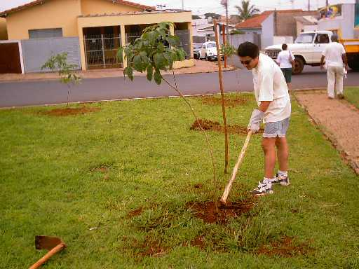
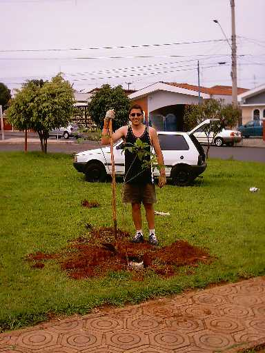
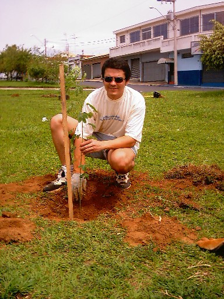
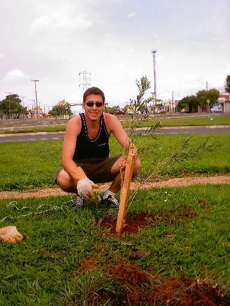
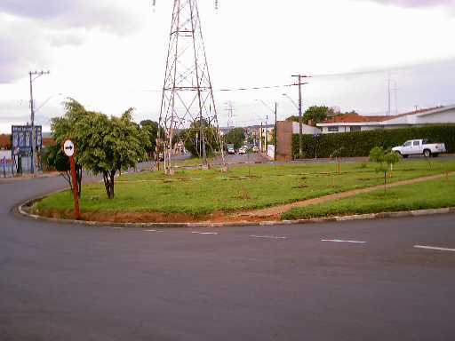
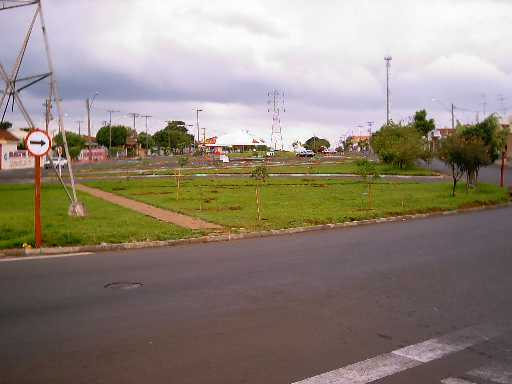

Mais um
plantio, e 15 novas mudas são
colocadas em uma rotatória, no entroncamento
das Avenidas Henrique Gregori e Grécia.
Neste dia
plantamos:
- 3 mudas de Canudo de Pito
- 6 mudas de Ipê Roxo
- 2 mudas de Chapéu de Napoleão
- 1 muda de Jerivá
- 3 mudas de Escova de Garrafa
|
Veja as fotos:
 |
Alexandre
termina o plantio de uma muda de Ipê Roxo. |
 |
Danilo
planta mais um Ipê Roxo. |
 |
Logo
após, um Canudo de Pito é plantado.
O chão mole nos ajuda a plantar com mais facilidade. |
 |
A Escova
de Garrafa é colocada no chão,
embelezando o local onde antes não havia
nenhuma árvore. |
|  |
O
plantio termina e mais 15 mudas são plantadas,
garantindo que o local tenha futuramente lindas árvores! |
|  |
Mas
o nosso trabalho não pára por aqui!
Em breve plantaremos mais mudas na metade restante
da rotatória! |
Mais uma vez
fizemos o nosso papel como Ecologistas,
arborizando uma região que ficou sem árvores pelo menos há um século.
Esperamos que
a nossa atitude inspire os moradores da área,
para que eles se animem a plantar!
Junte-se a
nós, venha fazer a sua parte na arborização de nossa cidade!
Plante a Vida!
|